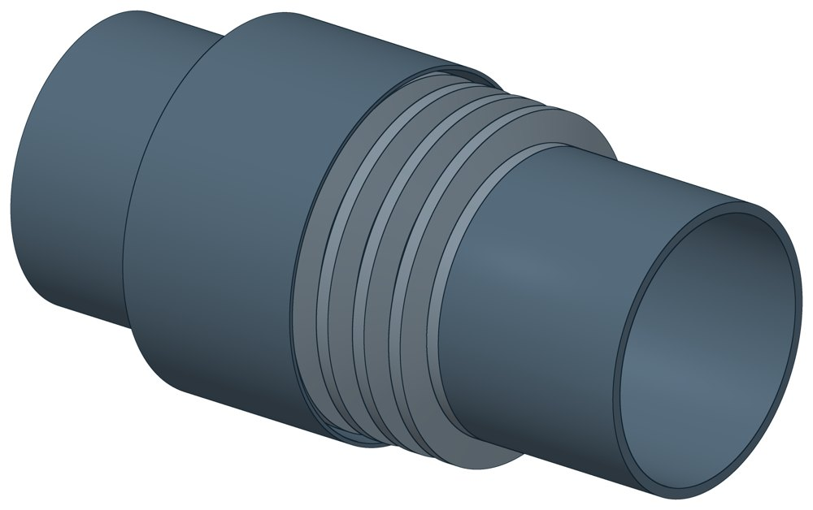

Компенсатор сильфонный для систем отопления
Dн 21.3–219 мм, масса 0,68–24,95 кг.

- Диаметр трубы Dн
- 21,3–219 мм
- Исполнений
- 63
- Масса
- 0,68–24,95 кг
- Цена в магазине
- 1 285–76 885 ₽
- 3D-модели
- у 59 из 63 исполнений (условные: общий вид по габаритам)
Таблица исполнений КО
| Обозначение | Код ПРОМБУРГ | Серия | Думм | Рукгс/см² | Ходмм | Lмм | D нар.мм | Наличие | Цена₽ | Массакг | 3D |
|---|---|---|---|---|---|---|---|---|---|---|---|
| DEK multilayer 15-16-50 | ПБ-КО-0015-1 | DEK multilayer | 15 | 16 | 50 | 285 | 40 | в наличии | 3 456 | 0,75 | 3D |
| DEK multilayer 20-16-50 | ПБ-КО-0020-1 | DEK multilayer | 20 | 16 | 50 | 285 | 40 | в наличии | 3 731 | 0,75 | 3D |
| DEK multilayer 25-16-50 | ПБ-КО-0025-1 | DEK multilayer | 25 | 16 | 50 | 285 | 48,3 | в наличии | 4 607 | 0,81 | 3D |
| DEK multilayer 32-16-50 | ПБ-КО-0032-1 | DEK multilayer | 32 | 16 | 50 | 285 | 60,3 | в наличии | 6 256 | 1,36 | 3D |
| DEK multilayer 40-16-50 | ПБ-КО-0040-1 | DEK multilayer | 40 | 16 | 50 | 285 | 70 | в наличии | 6 872 | 1,79 | 3D |
| DEK multilayer 50-16-50 | ПБ-КО-0050-1 | DEK multilayer | 50 | 16 | 50 | 285 | 80 | в наличии | 7 459 | 2,1 | — |
| DEK multilayer 65-16-60 | ПБ-КО-0065-1 | DEK multilayer | 65 | 16 | 60 | 290 | 114 | остатки — наличие уточняйте | 11 680 | 4,3 | 3D |
| DEK multilayer 80-16-60 | ПБ-КО-0080-1 | DEK multilayer | 80 | 16 | 60 | 290 | 133 | остатки — наличие уточняйте | 13 983 | 5,9 | 3D |
| DEK multilayer 100-16-60 | ПБ-КО-0100-1 | DEK multilayer | 100 | 16 | 60 | 330 | 159 | остатки — наличие уточняйте | 15 388 | 8,6 | 3D |
| DEK multilayer 125-16-60 | ПБ-КО-0125-1 | DEK multilayer | 125 | 16 | 60 | 330 | 219 | остатки — наличие уточняйте | 21 752 | 14 | 3D |
| DEK multilayer 150-16-60 | ПБ-КО-0150-1 | DEK multilayer | 150 | 16 | 60 | 330 | 219 | остатки — наличие уточняйте | 30 183 | 15,4 | 3D |
| DEK multilayer 200-16-60 | ПБ-КО-0200-1 | DEK multilayer | 200 | 16 | 60 | 390 | 290 | остатки — наличие уточняйте | 45 385 | 24,95 | 3D |
| КСО-Р 15-16-50 | ПБ-КО-0015-2 | КСО-Р | 15 | 16 | 50 | 285 | 40 | — | 1 285 | 0,68 | 3D |
| КСО-Р 20-16-50 | ПБ-КО-0020-2 | КСО-Р | 20 | 16 | 50 | 285 | 40 | — | 3 263 | 0,86 | 3D |
| КСО-Р 25-16-50 | ПБ-КО-0025-2 | КСО-Р | 25 | 16 | 50 | 285 | 48,3 | — | 4 078 | 1,23 | 3D |
| КСО-Р 32-16-50 | ПБ-КО-0032-2 | КСО-Р | 32 | 16 | 50 | 285 | 60,3 | — | 5 303 | 1,46 | 3D |
| КСО-Р 40-16-50 | ПБ-КО-0040-2 | КСО-Р | 40 | 16 | 50 | 285 | 70 | — | 6 525 | 1,71 | 3D |
| КСО-Р 50-16-50 | ПБ-КО-0050-2 | КСО-Р | 50 | 16 | 50 | 285 | 80 | — | 7 342 | 2,05 | — |
| КСО-Р/2 15-16-50 | ПБ-КО-0015-3 | КСО-Р/2 | 15 | 16 | 50 | 285 | 40 | — | 5 115 | 0,68 | 3D |
| КСО-Р/2 20-16-50 | ПБ-КО-0020-3 | КСО-Р/2 | 20 | 16 | 50 | 285 | 40 | — | 5 309 | 0,86 | 3D |
| КСО-Р/2 25-16-50 | ПБ-КО-0025-3 | КСО-Р/2 | 25 | 16 | 50 | 285 | 48,3 | — | 6 689 | 1,04 | 3D |
| КСО-Р/2 32-16-50 | ПБ-КО-0032-3 | КСО-Р/2 | 32 | 16 | 50 | 285 | 60,3 | — | 8 671 | 1,46 | 3D |
| КСО-Р/2 40-16-50 | ПБ-КО-0040-3 | КСО-Р/2 | 40 | 16 | 50 | 285 | 70 | — | 9 840 | 1,82 | 3D |
| КСО-Р/2 50-16-50 | ПБ-КО-0050-3 | КСО-Р/2 | 50 | 16 | 50 | 285 | 80 | — | 11 396 | 2,16 | — |
| КСО-Plast 15-16-50 | ПБ-КО-0015-4 | КСО-Plast | 15 | 16 | 50 | 285 | 40 | — | — | 0,95 | 3D |
| КСО-Plast 20-16-50 | ПБ-КО-0020-4 | КСО-Plast | 20 | 16 | 50 | 285 | 40 | — | 5 307 | 0,82 | 3D |
| КСО-Plast 25-16-50 | ПБ-КО-0025-4 | КСО-Plast | 25 | 16 | 50 | 285 | 48,3 | — | 6 925 | 1,29 | 3D |
| КСО-Plast 32-16-50 | ПБ-КО-0032-4 | КСО-Plast | 32 | 16 | 50 | 285 | 60,3 | — | 9 870 | 1,77 | 3D |
| КСО-Plast 40-16-50 | ПБ-КО-0040-4 | КСО-Plast | 40 | 16 | 50 | 285 | 70 | — | 11 261 | 2,6 | 3D |
| КСО-Plast 50-16-50 | ПБ-КО-0050-4 | КСО-Plast | 50 | 16 | 50 | 285 | 80 | — | 12 621 | 3,1 | — |
| DEK multilayer 65-16-60, L 270 | ПБ-КО-0065-2 | DEK multilayer | 65 | 16 | 60 | 270 | — | ожидается поступление | 11 680 | — | 3D |
| DEK multilayer 80-16-60, L 270 | ПБ-КО-0080-2 | DEK multilayer | 80 | 16 | 60 | 270 | — | ожидается поступление | 13 983 | — | 3D |
| DEK multilayer 100-16-60, L 270 | ПБ-КО-0100-2 | DEK multilayer | 100 | 16 | 60 | 270 | — | ожидается поступление | 15 388 | — | 3D |
| DEK multilayer 125-16-60, L 270 | ПБ-КО-0125-2 | DEK multilayer | 125 | 16 | 60 | 270 | — | ожидается поступление | 21 752 | — | 3D |
| DEK multilayer 150-16-60, L 280 | ПБ-КО-0150-2 | DEK multilayer | 150 | 16 | 60 | 280 | — | ожидается поступление | 30 183 | — | 3D |
| DEK multilayer 200-16-60, L 310 | ПБ-КО-0200-2 | DEK multilayer | 200 | 16 | 60 | 310 | — | ожидается поступление | 45 385 | — | 3D |
| DEK multilayer Мод.3 15-16-50, L 310 | ПБ-КО-0015-5 | DEK multilayer Мод.3 | 15 | 16 | 50 | 310 | — | в наличии | 3 810 | — | 3D |
| DEK multilayer Мод.3 20-16-50, L 310 | ПБ-КО-0020-5 | DEK multilayer Мод.3 | 20 | 16 | 50 | 310 | — | в наличии | 4 007 | — | 3D |
| DEK multilayer Мод.3 25-16-50, L 310 | ПБ-КО-0025-5 | DEK multilayer Мод.3 | 25 | 16 | 50 | 310 | — | в наличии | 4 758 | — | 3D |
| DEK multilayer Gr 25-16-50, L 330 | ПБ-КО-0025-6 | DEK multilayer Gr | 25 | 16 | 50 | 330 | — | в наличии | 5 990 | — | 3D |
| DEK multilayer Gr 32-16-50, L 330 | ПБ-КО-0032-5 | DEK multilayer Gr | 32 | 16 | 50 | 330 | — | в наличии | 8 133 | — | 3D |
| DEK multilayer Gr 40-16-50, L 330 | ПБ-КО-0040-5 | DEK multilayer Gr | 40 | 16 | 50 | 330 | — | в наличии | 8 934 | — | 3D |
| DEK multilayer Gr 50-16-50, L 330 | ПБ-КО-0050-5 | DEK multilayer Gr | 50 | 16 | 50 | 330 | — | в наличии | 9 957 | — | 3D |
| DEK multilayer Gr 65-16-60, L 330 | ПБ-КО-0065-3 | DEK multilayer Gr | 65 | 16 | 60 | 330 | — | в наличии | 14 913 | — | 3D |
| DEK multilayer Gr 80-16-60, L 330 | ПБ-КО-0080-3 | DEK multilayer Gr | 80 | 16 | 60 | 330 | — | в наличии | 17 854 | — | 3D |
| DEK multilayer Gr 100-16-60, L 360 | ПБ-КО-0100-3 | DEK multilayer Gr | 100 | 16 | 60 | 360 | — | в наличии | 19 135 | — | 3D |
| DEK multilayer Gr 125-16-60, L 360 | ПБ-КО-0125-3 | DEK multilayer Gr | 125 | 16 | 60 | 360 | — | в наличии | 29 035 | — | 3D |
| DEK multilayer Gr 150-16-60, L 360 | ПБ-КО-0150-3 | DEK multilayer Gr | 150 | 16 | 60 | 360 | — | в наличии | 40 289 | — | 3D |
| DEK multilayer Gr-Н 25-16-50, L 330 | ПБ-КО-0025-7 | DEK multilayer Gr-Н | 25 | 16 | 50 | 330 | — | в наличии | 9 243 | — | 3D |
| DEK multilayer Gr-Н 32-16-50, L 330 | ПБ-КО-0032-6 | DEK multilayer Gr-Н | 32 | 16 | 50 | 330 | — | в наличии | 13 441 | — | 3D |
| DEK multilayer Gr-Н 40-16-50, L 330 | ПБ-КО-0040-6 | DEK multilayer Gr-Н | 40 | 16 | 50 | 330 | — | в наличии | 15 905 | — | 3D |
| DEK multilayer Gr-Н 50-16-50, L 330 | ПБ-КО-0050-6 | DEK multilayer Gr-Н | 50 | 16 | 50 | 330 | — | в наличии | 20 241 | — | 3D |
| DEK multilayer Gr-Н 65-16-60, L 330 | ПБ-КО-0065-4 | DEK multilayer Gr-Н | 65 | 16 | 60 | 330 | — | в наличии | 27 555 | — | 3D |
| DEK multilayer Gr-Н 80-16-60, L 330 | ПБ-КО-0080-4 | DEK multilayer Gr-Н | 80 | 16 | 60 | 330 | — | в наличии | 29 074 | — | 3D |
| DEK multilayer Gr-Н 100-16-60, L 360 | ПБ-КО-0100-4 | DEK multilayer Gr-Н | 100 | 16 | 60 | 360 | — | в наличии | 33 846 | — | 3D |
| DEK multilayer Gr-Н 125-16-60, L 360 | ПБ-КО-0125-4 | DEK multilayer Gr-Н | 125 | 16 | 60 | 360 | — | в наличии | 52 180 | — | 3D |
| DEK multilayer Gr-Н 150-16-60, L 360 | ПБ-КО-0150-4 | DEK multilayer Gr-Н | 150 | 16 | 60 | 360 | — | в наличии | 76 885 | — | 3D |
| КСО-Р 15-16-50, L 320 | ПБ-КО-0015-6 | КСО-Р | 15 | 16 | 50 | 320 | — | в наличии | 5 966 | — | 3D |
| КСО-Р 20-16-50, L 320 | ПБ-КО-0020-6 | КСО-Р | 20 | 16 | 50 | 320 | — | в наличии | 6 318 | — | 3D |
| КСО-Р 25-16-50, L 330 | ПБ-КО-0025-8 | КСО-Р | 25 | 16 | 50 | 330 | — | в наличии | 7 145 | — | 3D |
| КСО-Р 32-16-50, L 335 | ПБ-КО-0032-7 | КСО-Р | 32 | 16 | 50 | 335 | — | в наличии | 10 096 | — | 3D |
| КСО-Р 40-16-50, L 330 | ПБ-КО-0040-7 | КСО-Р | 40 | 16 | 50 | 330 | — | в наличии | 12 582 | — | 3D |
| КСО-Р 50-16-50, L 350 | ПБ-КО-0050-7 | КСО-Р | 50 | 16 | 50 | 350 | — | в наличии | 15 580 | — | 3D |
Цена — из магазина promburg.ru на дату редакции каталога 11.10.2026, ₽ за штуку; актуальную цену и наличие уточняйте при заказе.
Чтобы заказать, сообщите обозначение и код ПРОМБУРГ: +7 (499) 325-51-35, promburg@yandex.ru.
Собрать узел с этим изделием
- Конструктор узла: собрать участок с компенсатором под свои данные труба, длина, среда, условия — состав узла и спецификация бесплатно
На трубу Dн 21,3–219 мм в каталоге
Позиции каталога с исполнениями на те же наружные диаметры трубы.
Опоры и подвески
- Опоры бескорпусные неподвижные ОБН общих Dн: 10
- Опора неподвижная хомутовая ТС-659 общих Dн: 7
- Опора неподвижная двухупорная ТС-660 общих Dн: 7
- Опора неподвижная хомутовая с корпусом ТС-670 общих Dн: 7
- Опорные плиты диэлектрические ТС-632 общих Dн: 7
- Опоры хомутовые подвижные 313 ТС общих Dн: 7
- Опоры хомутовые подвижные 313 ТС в футляре общих Dн: 7
- Опоры неподвижные ППУ-ОЦ (ПЭ) ППУ неподвижная общих Dн: 7
- Опоры скользящие ППУ-ПЭ(ОЦ) ППУ скользящая общих Dн: 7
- Опоры хомутовые скользящие ФСО1 для труб в ППУ общих Dн: 7
- Опоры хомутовые скользящие ФСО2 для ППУ общих Dн: 7
- Опоры приварные неподвижные скользящие ОПН общих Dн: 7
- Опоры скользящие и неподвижные ОХН общих Dн: 7
- Опоры сварные скользящие неподвижные и направляющие СТО 79814898-130 общих Dн: 7
И ещё 79 типов — в оглавлении каталога.
Детали трубопровода
- Отвод стальной крутоизогнутый 90° общих Dн: 15
- Заглушка стальная эллиптическая общих Dн: 7
- Отвод стальной крутоизогнутый 90°, 09Г2С общих Dн: 7
- Переход стальной концентрический общих Dн: 7
- Фланец стальной воротниковый общих Dн: 7
- Фланец стальной плоский приварной общих Dн: 7
- Отвод нержавеющий 90° общих Dн: 2
- Тройник стальной равнопроходный общих Dн: 1
Другие компенсаторы
- Компенсатор сильфонный DEK общих Dн: 15
- Компенсатор сильфонный для отопления с кожухом КОК общих Dн: 15
- Компенсатор сильфонный КС общих Dн: 15
- Компенсатор сильфонный КСО общих Dн: 15
- Компенсатор сильфонный КСО-Д КСОД общих Dн: 15
- Компенсатор сильфонный антивибрационный газовый КСУ-Г КСУГ общих Dн: 15
- Компенсатор сильфонный сейсмический общих Dн: 15
- Компенсатор сильфонный фланцевый KSOF общих Dн: 10
- Компенсатор сильфонный 2ОПКР общих Dн: 7
- Компенсатор сильфонный 2ОПКР (ИЯНШ) 2ОПКРИ общих Dн: 7
И ещё 24 типа — в оглавлении каталога.
Другие типы раздела
Компенсаторы (сильфонные, резиновые)
- Компенсатор сильфонный 2ОПКР
- Компенсатор сильфонный 2ОПКР (ИЯНШ) 2ОПКРИ
- Компенсатор сильфонный 2СКУ.М 2СКУМ
- Компенсатор сильфонный 2СКУ.М (ИЯНШ) 2СКУМИ
- Компенсатор сильфонный 2СКУ.ППМ 2СКУППМ
- Компенсатор сильфонный 2СКУ.ППМ (ИЯНШ) 2СКУППМИ
- Компенсатор сильфонный 2СКУ.ППУ 2СКУППУ
- Компенсатор сильфонный 2СКУ.ППУ (ИЯНШ) 2СКУППУИ
- Компенсатор сильфонный 2СКУ.ППУ/ОЦ (ИЯНШ) 2СКУППУОЦИ
- Компенсатор сильфонный DEK
- Компенсатор сильфонный фланцевый KSOF
- Компенсатор сильфонный для отопления с кожухом КОК
- Компенсатор сильфонный КС
- Компенсатор сильфонный КСО
- Компенсатор сильфонный КСО.3 с внутренним экраном КСО3
- Компенсатор сильфонный КСО-Д КСОД
- Компенсатор сильфонный КСО (ИЯНШ) КСОИ
- Компенсатор сильфонный КСОФ
- Компенсатор сильфонный антивибрационный газовый КСУ-Г КСУГ
- Компенсатор сильфонный ОПКР
- Компенсатор сильфонный ОПКР (ИЯНШ) ОПКРИ
- Компенсатор резиновый фланцевый NBR РКН
- Компенсатор резиновый фланцевый SBR РКС
- Компенсатор резиновый фланцевый PTFE РКТ
- Компенсатор резиновый фланцевый EPDM РКЭ
- Компенсатор сильфонный сейсмический
- Компенсатор сильфонный стартовый СК
- Компенсатор сильфонный СКУ.М СКУМ
- Компенсатор сильфонный СКУ.М (ИЯНШ) СКУМИ
- Компенсатор сильфонный СКУ.ППМ СКУППМ
- Компенсатор сильфонный СКУ.ППМ (ИЯНШ) СКУППМИ
- Компенсатор сильфонный СКУ.ППУ СКУППУ
- Компенсатор сильфонный СКУ.ППУ (ИЯНШ) СКУППУИ
- Компенсатор сильфонный СКУ.ППУ/ОЦ (ИЯНШ) СКУППУОЦИ
Частые вопросы
Что указать в заявке, чтобы получить цену без уточнений?
Обозначение с номером исполнения или код ПБ, количество, Dн и стенку трубы, расчётную температуру наружного воздуха, покрытие, город доставки и желаемый срок. Кнопка «В заявку» в таблице собирает спецификацию, которую можно выгрузить в Excel или отправить письмом.
Как расшифровать обозначение 2СКУ.М-16-200-320?
Цифра 2 впереди — два сильфона, СКУ.М — тип, 16 — давление Ру в кгс/см², 200 — условный проход Ду, 320 — осевой ход в миллиметрах. У компенсаторов КСО порядок другой: КСО 20-16-50 — это Ду 20, Ру 16, ход 50 мм. Рядом в таблице стоит код ПРОМБУРГ вида ПБ-2СКУМ-0200-1: тип, Ду, номер внутри типа и Ду.
Осевой ход в таблице — это в одну сторону или полный?
У изделий с пометкой ИЯНШ — полный рабочий ход: сжатие плюс растяжение. Компенсатор поставляется в среднем положении и работает на половину этого хода в каждую сторону; у стартовых указан ход сжатия. Для остальных позиций уточняйте при заказе.
Компенсатор подбирают по Ду или по наружному диаметру трубы?
В таблицах раздела стоит условный проход Ду. Патрубок под приварку соответствует стальной трубе этого прохода: Ду 100 — труба 108 мм, Ду 200 — 219 мм. В заявке укажите наружный диаметр и толщину стенки трубы.
Что значит пометка «модель условная»?
3D-модель компенсатора показывает общий вид по габаритам из таблицы: длине, диаметрам, стенке патрубка. Число и профиль гофр, размеры кожуха и фланцев приняты типовыми. Это не чертёж: для привязки берите размеры из таблицы.
На какую температуру рассчитаны сильфонные компенсаторы?
Для изделий ИЯНШ: сетевая вода и ГВС — до 200 °С, пар — до 350 °С. Для компенсаторов в пенополимерминеральной изоляции (СКУ.ППМ) — до 150 °С, в ППУ-изоляции (ПЭ.I и ОЦ) — вода до 140 °С, кратковременно до 150 °С. Для остальных позиций раздела температуру уточняйте при заказе.
Какой срок службы и ресурс у сильфонного компенсатора?
Для изделий ИЯНШ назначенный срок службы — не менее 30 лет. Ресурс задан числом циклов: для тепловых сетей — 10 циклов на полный ход, 150 циклов на 70 % хода и 10 000 циклов на 20 % хода; для паропроводов — 3000 циклов. Стартовый компенсатор рассчитан на один рабочий цикл при вводе сети.